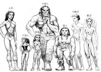
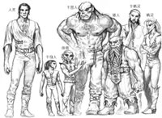

精灵森林是精灵及其盟友的家，在那儿你见不到多少矮人和半兽人。同样，精灵、人类、半身人和半兽人也不常出没于地底的矮人城市。虽然人类以外的种族也可能穿越人类乡村，但多数乡下人都是人类。然而在大城市里，对权力和利益的渴望集合了所有常见种族：人类、矮人、精灵、侏儒、半精灵、半兽人和半身人。
选择种族
当你掷完基本属性值后，先不要忙着把它们记到人物记录单上，而应先给你的人物选择好种族。此时你也应为他或她选择职业，因为种族影响着他或她在各个职业中的表现。当你知道了你的人物的种族和职业后，把你掷出的基本属性值分配给各项基本属性，依据种族修改这些属性（参见《玩家手册》表2-1“种族基本属性调整”），然后继续设计你的人物。
你可以扮演任何种族或职业的人物，但一些种族确实更适于从事某几种事业。举例来说，半身人可以成为斗士，但短小的身材和特殊的特征使他们更加胜任游荡者这一职业。
你的人物种族给了你这个人物性情的很多提示，比如他或她是什么类型的人，他或她对其它种族人物的看法如何，以及他或她的动机可能是什么。但要记住，下面对各种族的描述只适用于各种族内多数成员。在每个种族内，都有一些个体偏离规范，而你的人物可以是其中之一。别让对种族的描述妨碍你按自己的喜好丰富人物。
种族特征
你的人物的种族决定了他或她的一些特性。
基本属性值调整
在《玩家手册》表2-1“种族基本属性调整”中找出你所选的种族，并用你查到的调整值来修正你的人物的基本属性。如果这些改变可以把基本属性升到18 以上或降到3以下。例外：人物的智力值不能低于3。如果你的半兽人人物调整基本属性之后智力变成了1或2，将它改为3。
举例来说，莉达作为半身人有+2的种族灵敏奖励值和-2的种族力量处罚值。扮演莉达的玩家知道这一点，于是把她掷出的最高数值（15）放在灵敏上，按种族调整后变成了17。她不想有一个力量处罚修正值，所以她把一个高于一般值的数值（12）放到力量上。它降到了10，既不带来奖励，也不带来处罚。
天赋职业
《玩家手册》表2-1“种族基本属性调整”上也列出了各种族的天赋职业。在决定多重职业的经验值处罚时，人物的天赋职业不被计算（参见《玩家手册》第56页“多重职业人物的经验值”）。
举例来说，作为一个半身人游荡者，莉达以后可以增加第二个职业（成为一个多重职业人物）而无需担心受到经验值处罚。
|
表2-1 种族基本属性调整 | ||
| 种族 | 基本属性调整 | 天赋职业 |
| 人类 | 无 | 任何 |
| 矮人 | +2体质，-2魅力 | 斗士 |
| 精灵 | +2灵敏，-2体质 | 巫师 |
| 侏儒 | +2体质，-2力量 | 幻术师* |
| 半精灵 | 无 | 任何 |
| 半兽人 |
+2力量，-2智力**， |
蛮战士 |
| 半身人 | +2灵敏，-2力量 | 游荡者 |
| *专精于幻相系法术的巫师 **一个半兽人的智力至少为3，如果种族调整会把智力值降到1或2，那他或她的智力为3。 | ||
种族和语言
在一个大城市里，来访者可以听到各种各样的语言。矮人用矮人语为宝石讨价还价，精灵贤者用精灵语参加学术辩论，而传教士都用天国语颂出祷文。但最常听到的语言是通用语，这种语言被文明大家庭中每一个成员使用。由于所有这些语言都正在被使用，所以人们学习别的语言十分容易，而冒险者们通常会说数种语言。
所有人物都会讲通用语。矮人、精灵、侏儒、半精灵、半兽人和半身人都能使用一门相应的种族语言。聪明的人物（有智力奖励值的）也能讲其它语言，每点智力奖励值对应着一门额外的语言。从本章后面你的人物种族的描述中选出他或她的奖励语言（如果有的话）。
读写能力：除非你的人物是位蛮战士，他或她可以读写任何他或她能说的语言（一个蛮战士可以通过花费技能点数的方法得到读写能力）。
职业相关语言：牧师、德鲁依和巫师可以选择某些语言作为附加语言，即使这些语言并未在种族描述中列出。这些职业相关语言如下：
牧师：无底深渊语、天国语、地狱语
德鲁依：森林语
巫师：龙语
|  |  |
{kind=link}
{kind=link}
人类
多数人类是开拓者、征服者、商人、旅行者、流亡者和其它迁移不定者的后代。因此，人类的国土是不同民族的融合——身体上、文化上、信仰上及政治上。强壮或纤细，深肤色或浅肤色，炫耀或简朴，原始或文明，虔诚或不敬，人类中无所不有。
性格
人类是常见种族中最具适应性、灵活性和野心的一群。他们爱好、道德、风俗和习性变化多样。其它种族指责人类缺乏对过去的尊敬，但这是人类作为有着较短生命跨度和不断改变的文化的种族，比起矮人、精灵、侏儒和半身人有着更短的集体记忆所必然带来的天性。
身体描述
一个典型的人类身高从5尺到6尺出头，体重在125磅到250磅之间。男性人类明显比女性高大壮实。由于强烈的移民、征服倾向，以及短促的寿命，人类身体上的多样性远比其它常见种族多，肤色从近乎黑色到苍白，头发从黑色到金色（波浪、卷曲、顺直）。男性的胡子有的浓密有的稀疏。许多人类的血管里都掺杂着一些不属于人类的血液，从而显现出精灵、兽人或其他种族的一些特征。人类的装饰和衣着常常招摇而背离传统，并且喜爱不寻常的发行、奇异的衣服、纹身、环饰和类似的东西。人类生命长度很短，大约15岁成年，而且很少活过仅仅一个世纪。
种族关系
就像彼此间乐于融合一样，人类也和其它种族的成员混合。在其它种族间，人类被称为“每个人第二好的朋友”。他们担当大使、外交官、地方法官、商人和各种各样的官员。
阵营
人类并不趋向于某一阵营，甚至也不趋向中立。人类中鱼龙混杂，从最好的到最差的一应俱全。
人类国土
人类的国土通常在不断变化之中，新主意、社会变革、改革和新领袖不断登台亮相。长寿种族的成员们觉得人类文明令人兴奋但终究有点令人疲倦甚至困惑。
因为如此短的寿命，人类的领导人比起别的种族的政治、宗教和军事领袖都要年轻。即使是个体人类传统保守的地方，人类的制度也随着世代更替而改变，比精灵、矮人、侏儒和半身人中类似制度更快地适应并进化。作为个体和群体，人类都是适应性强的机会主义者，而他们最精于改变政治动态。
人类国土中通常有着数量相当大的非人类（比较而言，比如和在矮人国度上居住的非矮人的数量相比）。
宗教
和其它常见种族的成员不同，人类们并没有一个种族主神。太阳神培洛尔是人类国土中最常被敬拜的神祗，但丝毫没有矮人给予摩安丁或精灵给予柯瑞隆那样的中心地位。一些人类是某个宗教最热心最狂热的追随者，而其它的则是周围最无信仰的家伙。
语言
人类说通用语。他们常常学习其它语言，包括那些晦涩难懂的语言。而他们也喜欢在他们的交谈中混杂一点从其它的语言借来的词汇：兽人的咒骂、半身人的烹调术语、精灵音乐般的表达和矮人的军用短语等等。
名字
人类的名字变化繁多。既没有全体信奉的神祗给他们文化的标准，又加上那么快的繁殖周期，人类社会上的变化十分频繁。因此人类文化比起其它任何文化都有着更强的多样性，而没有哪些人类名字是真正典型的。一些人类父母为他们的小孩取矮人或精灵名字（发音差不多正确）。
冒险者
人类冒险者是一个创新、大胆、具有野心的种族中最富创新、最有胆量、最具野心的成员。一个人类可以通过积聚权力、财富和名声来获得同类的尊敬。人类比其它种族更倾向于捍卫理想而非领土和群体。
人类种族特性
◎中等大小：作为中等大小生物，人类不因他们的身体尺寸而得到特别的奖励或处罚。
◎人类基本移动速度为30尺
◎第一级时多1个额外的特技，因为人类能很快掌握某专业工作并且有各种各样的天分。见《玩家手册》第五章“特技”。
◎第一级时多4点技能点数，此后每一级多1点技能点数，因为人类是多才多艺、富于能力的（第一级时的4点技能点数是作为奖励值加入的，而非入乘；见《玩家手册》第四章“技能”）。
◎自动获得语言:通用语。附加语言：任何（不包括秘密语言如德鲁依语）。常见语言列表见其它种族的描述，或参阅《玩家手册》表4-6“语言”以求更加全面的列表。人类和各种各样其它种族来往，因此能学习地区中任何的语言。
◎天赋职业:任何。决定一个多重职业人类是否受到经验值处罚时，他等级最高的职业不被计算（参见《玩家手册》第56页“多重职业人物的经验值”）。
矮人
矮人以战斗技巧、对物理或魔法伤害的抵挡能力、对大地秘密的了解、努力工作和豪饮而闻名。他们在山脉内开辟的神秘国度也以他们作为礼物或商品在那里生产的非凡财宝而知名。
性格
矮人不苟言笑，并且怀疑陌生人，但对少数赢得他们信赖的人十分慷慨。矮人珍视黄金、宝石、珠宝和由这些珍贵原料加工成的艺术品，而他们有时会屈从于这贪欲。他们战斗时既不莽撞也不胆怯，而是有一种不失细心的勇气和顽强。他们的正义感强，但这种正义感最坏时可能变成一种对复仇的渴望。在与矮人出了名地相处融洽的侏儒中，有一句不甚严厉的誓言“如果我在说谎，就让我碰上一个矮人”。
身体描述
矮人站着只有3.5尺到4.5尺高，但由于他们身材非常宽厚敦实，所以他们的平均体重几乎与人类相同。男性矮人比女性身材稍高，体重则重上很多。矮人的典型肤色是棕褐色或浅棕色，并有着黑色眸子。矮人的头发通常是黑色、灰色或棕色的，并且留得很长。男性矮人非常珍惜自己的胡须，并且十分仔细地修整它。矮人在头发、胡须和衣着的式样上崇尚简朴。矮人50岁左右成年，并且能够活过400岁。
种族关系
矮人能和侏儒融洽相处，和人类、半精灵和半身人也还过得去。矮人们说，“熟人和朋友之间的差别大约是一百年”。短命的人类很难与矮人之间锻铸出真正稳固的关系。最好的矮人－人类友谊发生在人类和喜欢他的父母和祖父母的矮人之间。矮人没会赏识精灵的微妙感觉和艺术，认为精灵是不可预知、变幻无常而不稳定的。但精灵和矮人经过一段时间之后还是在对兽人、地精和豺狼人的战斗中找到了共同点；精灵也因此挣得了矮人勉强的尊重。矮人一般不相信半兽人，半兽人对矮人也有一样的感觉。幸运地，矮人是公平的种族，他们给半兽人个体证明自己的机会。
阵营
矮人通常是守序的，而且倾向于善良。但四处冒险的矮人并不一定经常和一般性情合拍，因为他们更常是那些无法完全融入矮人社会的矮人。
矮人国土
矮人王国常常在山脉的岩石表面之下，矮人在那里开采宝石和贵重金属并铸造神奇的物品。这里欢迎其它种族可以信赖的成员的访问，但国土内有些区域即使是这些人也不能进入。所有矮人无法在他们的山脉中找到的财富都通过贸易获得。矮人不喜欢在水上旅行，所以有魄力的人类经常掌握着须经水路运输的矮人货物的交易活动。矮人在人类国土中常常是佣兵、武器匠、铠甲匠、宝石匠和工匠。矮人保镖以他们的勇气和忠诚闻名，他们也会因这些优点而得到很好的报酬。
宗教
矮人的主神是灵魂铸造者摩安丁。他是矮人的创造者，并且希望他的追随者为了改善矮人这一种族的境遇而工作。
语言
矮人讲矮人语，有着自己神秘的文字体系。矮人文学上有着诸王国广泛的历史和数千年来战争的烙印。矮人语的字母表也用在（有着细微的改变）侏儒语、巨人语、地精语、兽人语和大地语，矮人常常会说他们朋友（人类和侏儒）和敌人的语言。一些矮人也学习大地语——一些根植土地的生物比如巨口地怪讲的奇异语言。
名字
矮人的名字是由宗族中的长者依照传统授予的。每个合适的矮人名字都被一代一代反复使用。一个矮人的名字不属于他自己，而是属于他的宗族。如果他按用这个名字或使其蒙羞，他的宗族会剥夺他的名字。矮人法律禁止被剥夺名字的矮人使用任何矮人名字代替旧名。
男性名：佰恩德、博若特、伊贝克、因克、阿斯卡、瑞克、泰克林、特若本、欧夫格和维特
女性名：艾提、阿朵赫德、达格娜、迪萨、甘劳达、荷因、伊德、莉芙若萨、萨娜和托尔格
宗族名：佰达克、得克、格恩、霍德赫克、拉德、卢特赭、茹赫姆、斯特克林、托恩和阿格特
冒险者
矮人冒险者可能是被献身正义的热诚、对刺激的热爱或仅仅是贪欲推动。只要他的成就能给宗族带来荣誉，他的行为就能给他带来尊敬和地位。击败巨人和取得强大的魔法武器都是矮人赢得同类尊敬的可靠手段。
矮人种族特性
◎+2点体质，-2点魅力：矮人敦实体壮，但往往粗暴沉默。
◎中等大小：作为中等大小生物，矮人不因他们的身体尺寸而得到特别的奖励或处罚。
◎矮人的基本移动速度为20尺
◎暗视：矮人在黑暗中可以看见周围60英尺内的物体。暗视的影像是黑白的，但其它方面和一般视觉无异。矮人可以在完全没有光亮的地方很好地活动。
◎石头熟悉：石头熟悉使矮人在发觉不寻常石制品的检定中得到+2点种族奖励值。这些不同寻常的石制品包括滑墙、石制陷阱、新建物(即使这些新建的东西刻意模仿着原来建筑的模式)、不安全的石头表面、可能坍塌的石制天花板等等。那些并非石制但伪装成石头的东西也算是不寻常的石制品。一个矮人仅需来到不寻常石制品周围10尺以内就可以进行一次检定，就和他正在主动搜索一样。矮人能使用搜寻技能像流浪者那样寻找石制陷阱。矮人也可以凭直觉感觉出自己所处的大致深度，就像人类能感觉到哪条路向上一样。矮人对石制品有一种第六感，这是一种天生的能力，而且他们在自己的地下家园中有很多机会来实践磨练此能力。
◎+2点对抗毒药的豁免判定种族奖励值：矮人十分健壮并且对毒素有抵抗力。
◎+2点对抗法术或类法术效果的豁免判定种族奖励值。
◎+1点针对兽人和地精类生物（地精、大地精和熊地精）的攻击判定种族奖励值：矮人接受了特殊的战斗技巧训练，使他们能更加有效地和常见敌人战斗。
◎+4点对巨人的闪避奖励值：这个奖励表现了矮人接受的特殊训练，在此训练中他们学到了一代代在与巨人的战斗中积累发展出的窍门。注意，任何时候只要人物失去了他的灵敏属性对防护等级的奖励值——比如他被别人打了个措手不及时——他也会失去他的闪避奖励值。
◎+2点与宝石及金属有关的估鉴测定种族奖励值：矮人对所有种类的贵重物品（特别是由石头或金属制成的）都很熟悉。
◎+2点与宝石及金属有关的手艺判定种族奖励值：矮人在加工石头和金属上有着特别的才能。
◎自动获得语言:通用语和矮人语。附加语言:巨人语、侏儒语、地精语、兽人语、大地语和地底通用语。矮人对自己的敌人和地底盟友的语言都很熟悉。
◎天赋职业:斗士。决定一个多重职业矮人是否受到经验值处罚时，他的斗士职业不被计算（参见《玩家手册》第56页“多重职业人物的经验值”）。矮人文化赞美战士的优点，而矮人可以轻松地得到这方面的才能。
精灵
精灵能够自由地出入人类国土。他们在那里总会受到欢迎，但从来不会感到在家一般的安适。他们以诗歌、舞蹈、歌曲、学识和魔法技巧而闻名。精灵崇尚自然的事物和单纯之美。但当危险威胁到他们的森林家园时，他们也会用剑、弓和战斗策略来展现自己尚武的一面。
性格
精灵更经常是愉快的而非兴奋的、更可能是好奇的而非贪婪的。如此长寿的他们趋向于以开阔的视角看待事情，超然地面对较小的意外事件，不受它们的打扰。但当追逐一个目标时——不管是完成冒险性的任务还是学习一门新的技能或艺术——他们能变得十分专注且毫不松懈。他们要经过很长时间才能和别人成为朋友或敌人，而忘记他们甚至需要更长的时间。他们对细微的冒犯报以轻蔑，对严重的冒犯报以复仇。
身体描述
精灵矮小而纤细，身高在4.5尺到5.5尺之间，体重则通常在85磅到135磅之间。男性精灵和女性精灵的身高并无差异，仅仅是肩臂比女性略微厚壮。精灵优雅但脆弱，他们往往有着苍白的肤色、暗色调的头发和深绿色的眼睛。精灵面部和身体上没有毛发。精灵没有面毛或体毛。他们喜欢简单、舒适的服装——特别是淡蓝色和淡绿色的——也喜欢简单但雅致的珠宝。精灵有着超然的优雅和纤细的轮廓。很多人类和其它的种族的成员认为精灵美的让人无法忘怀。精灵大约在 110岁左右到达成年并且能活过700岁。
和其它常见种族不同，精灵并不睡眠。作为替代，精灵每天在一种很深的出神状态中冥想4个小时。精灵用这种方法休息所受的益处和人类睡眠8小时得到的相同。当冥想时精灵会做梦，但这些梦实际上是经多年练习产生的自发性精神锻炼。通用语中形容精灵冥想的词汇是“出神”，例如前文中的“每天在一种很深的出神状态中冥想4个小时”。
种族关系
精灵认为人类相当粗俗，半身人有些呆板，侏儒有点琐碎，矮人则一点也不愉快。他们以某种程度的同情看待半精灵，对半兽人则有着毫不松懈的猜疑。虽然也傲慢，但精灵并不像半身人和矮人那样难以取悦，即使对那些达不到精灵标准的家伙（差不多所有非精灵都算在内）他们通常也是友善亲切的。
阵营
精灵爱好自由、多样和自我表现。他们强烈地倾向于混乱的各种优雅面。一般他们也像对待自己的自由一样重视并保护别人的自由，并且更经常是善良的而非中立或邪恶。
精灵国土
精灵主要生活在由不到200人组成的森林群落中。他们十分隐秘的村庄混杂在树木中，几乎不对森林造成任何伤害。他们猎取猎物，采集食物并种植蔬菜，他们的技巧和魔法使他们无需开拓空地和耕种就可以丰衣足食。他们和外界的联系通常有限，虽然少数一些精灵靠用精致的精灵衣服和工艺品交换精灵没兴趣开采的金属而谋生。
出现在人类国土中的精灵通常是漫游的歌手、受欢迎的艺术家或贤者。人类贵族争相聘请精灵教练教他们的孩子剑术。
宗教
精灵敬拜生命保护者及保存者柯瑞隆·拉瑞斯安胜过其它一切神祗。精灵神话中说精灵最初是源自柯瑞隆与兽人之神格乌什战斗时流下的血液。柯瑞隆是魔法学习、艺术、舞蹈和诗歌的守护神，同时也是一位强大的武士神。
语言
精灵使用一种有着微妙语调和错综复杂语法的流畅语言。虽然精灵文学丰富多样，但这种语言最著名的还是它的诗歌。很多吟游诗人学习精灵语以在自己的节目单上加入精灵歌谣。其它人简单地从声音上记忆精灵歌曲。同口语一般流畅的精灵文字同时也是森林语——树精和林隐精的语言——的文字。
名字
当一个精灵宣布自己进入成年时——通常在她渡过一百岁生日后的某一时刻——她也为自己选一个名字。那些当她还是小孩时就认识她的人可能会继续使用她的 “幼名”称呼她也可能不会，而她可能会介意也可能不会。一个精灵的成年名是一个独特的创造，虽然它可能反映了她钦佩的人的名字或她家庭中其它成员的名字。此外，她也带有她的家族名。家族名是常见精灵语词汇组成的复合词，而当精灵在人类间行走时其中一些会把名字翻译为通用语，其它的会使用精灵语版。
男性名：埃尔默、阿斯特、伊奈勒斯、赫安、赫默、埃维利沃斯、瓦什、库瑞安、瑟米尔和塞尔文。
女性名：安娜丝特瑞娜、安提诺阿、朵丝莉拉、芙罗丝、爱莉尼、莱尔、奎拉丝、丝勒昆、维仑丝和丝埃芙亚。
家族名：阿玛斯特沙（“星花”）、阿玛克尔（“宝石花”）、格兰诺得（“月语”）、赫勒米恩（“钻石露珠”）、勒顿（“银叶”）、米利默那（“橡跟”）、纳罗（“夜风”）、辛安诺得（“月溪”）、伊夫克尔（“宝石果花”）和修勒什特（“金瓣”）。
冒险者
精灵由于漫游欲而开始从事冒险。人类生活的步调不讨精灵喜欢：每天都有系统、每十年都有变化。因此，人类中的精灵找到了使他们可以自由漫步而且依照自己步调的事业。精灵也喜欢展现他们在剑和弓上的威力或得到更大的魔法力量，而冒险能让他们达到这些目的。善良的精灵也可能成为起义者或讨伐者。
精灵种族特性
◎+2点敏捷，-2点体质：精灵优雅但脆弱。一个精灵的优雅使她天生地善于潜行和箭术。
◎中等大小：作为中等大小生物，精灵不因他们的身体尺寸而得到特别的奖励或处罚。
◎精灵的基本移动速度为30尺
◎对魔法催眠法术和影响免疫，并在对抗惑控系法术或影响的豁免判定中得到+2点种族奖励值。
◎低光视力：精灵在星光、月光及火把光线或类似的光线昏暗条件下的视野是人类的两倍。在这些条件下他们依然能够辨别颜色及其深度。
◎熟练使用长剑或细剑，以及短弓、长弓、复合短弓和复合长弓。精灵珍视剑术和箭术的艺术，因此所有的精灵都很熟悉这些武器。
◎+2点听觉、搜寻及察辨检定种族奖励值。一个精灵仅需来到密门周围5尺以内就可以进行一次检定以决定是否发现它，就和他正在主动搜索一样。一个精灵的感觉是如此敏锐以至于她实际上对隐藏入口有种第六感。
◎自动获得语言:通用语、精灵语。附加语言:龙语、豺狼人语、侏儒语、地精语、兽人语和森林语。精灵通常了解他们的敌人和朋友的语言，同时也了解龙语——记载着秘密知识的古老典籍通常使用的语言。
◎天赋职业:巫师。决定一个多重职业精灵是否受到经验值处罚时，她的巫师职业不被计算（参见《玩家手册》第56页“多重职业人物的经验值”）。巫术对精灵来说得来十分自然（他们有时宣称是他们发明了它），而斗士/巫师在精灵中尤其普遍。
侏儒
侏儒作为技师、炼丹师和发明家在各地都受到欢迎。尽管他们的技能广受需要，多数侏儒还是喜欢待在同类当中，住在高低起伏、被林木覆盖的山丘——那里的动物很多但狩猎是个非常糟糕的念头——之下的洞穴中。
性格
侏儒十分喜爱动物、美丽的宝石和所有种类的笑话。侏儒有强烈的幽默感，而且热爱双关语、笑话和游戏，他们对恶作剧津津乐道——越复杂难解的越好。幸运的是，他们不仅善于开玩笑，也对诸如工程一类更加实用的技艺作出了同样大的贡献。
侏儒十分好奇。他们喜欢亲自找出问题的答案。有时他们甚至不及后果。他们的好奇心使他们成为有才能的工程师，因为他们总是试着用新方法建造物品。有时侏儒搞一个恶作剧仅仅是为了看当事者会作出何种反应。
身体描述
侏儒的身高约在3尺到3.5尺之间，体重约为40磅到45磅。肤色从暗棕色到木棕色，头发金黄，目色可能是任何深度的蓝色。男性侏儒喜欢留短而整齐的胡须。侏儒通常穿着皮革或土色衣服，并用错综复杂的缝合或精致的珠宝装饰着。侏儒在约40岁时到达成年，并能活到约350岁，但一些侏儒可以活几乎500 年。
种族关系
侏儒与矮人相处的很好，因为他们都有着对贵重物品的热爱、对机械装置的好奇和对地精及巨人的憎恨。他们喜欢半身人伙伴，特别是那些随和的足以忍受恶作剧和俏皮话的半身人。多数侏儒对高个子种族——人类、精灵、半精灵和半兽人——都有那么点猜疑，但他们很少对这些种族心怀敌意或恶意。
阵营
侏儒最常是善良的。趋向于秩序的侏儒是贤者、工程师、研究家、学者、调查家或顾问。那些趋向于混乱的侏儒是骗子、流浪者或喜爱奇想的珠宝匠。侏儒心地善良，甚至他们中的骗子也是顽皮多于恶毒。幸运地，邪恶的侏儒就像骇人的侏儒一样稀少。
侏儒国土
侏儒居住在树木繁茂的丘陵地区。他们生活在地下，但享受着比矮人更多的新鲜空气，喜爱自然，只要有机会就会生活在地表。他们的家园隐蔽得很好，既靠聪明的结构也靠幻术。那些受欢迎的来访者会被引到明亮、温暖的洞穴。那些不受欢迎的则永远连洞穴都找不到。
迁入人类国土的侏儒一般是宝石匠、机械师、贤者或家庭教师。一些人类家庭聘请侏儒教师。一个侏儒教师一生可以教育一个人类家庭中好几代的成员。
宗教
侏儒的主神是警戒守护者格尔·闪金。他的牧师们教导侏儒要珍爱、支持他们的聚居地。恶作剧——举例来说——就被视为放松精神和使侏儒保持谦虚的方法，而不是为了让恶作剧者击败被捉弄者。
语言
使用矮人语字符的侏儒语以它的技术论述和对自然世界知识的编目而闻名。人类的植物学家、博物学家和工程师通常都学习侏儒语以阅读他们研究领域中最佳的著作。
名字
侏儒热爱名字，多数都有约半打名字。当一个侏儒长大成人时，他母亲给他一个名字，他父亲给他一个名字，他宗族的长老给他一个名字，他的婶婶叔叔们给他名字，而他又从几乎每个人那里得到绰号。侏儒名字通常是由祖先或远房亲戚的名字加以改变而来，虽然其中一些是全新的发明。当与人类和其它对名字十分“乏味”的种族打交道时，侏儒学到了装出他们只有不超过三个名字：一个个人名、一个宗族名和一个绰号。当决定要在人类中使用他几个名字中的哪一个时，侏儒通常会选择说起来最好玩的一个。侏儒宗族名是由侏儒语常见词汇组成的复合词，而当侏儒在人类国土中时几乎总是会把它们翻译进通用语（或者在精灵国土中就翻译为精灵语等等）。
男性名：巴迪诺克、丹伯、佛肯、格利姆、哲布、赭比度、纳姆佛得、茹恩达、希波和祖克。
女性名：毕普妮汀、凯尔莫普、杜沃弥尔、爱勒维克、爱勒赭波、露普莫汀、玛得奈波、茹雨恩、莎米尔和维沃柯特。
宗族名：比瑞、戴尔赭、佛罗克、盖瑞克、奈可、莫宁、尼赭、茹洛诺、舒本恩和突恩
绰号：“啤酒乱溅”、“灰炉地”、“獾”、“斗篷”、“双重锁”、“偷窃击球手”、“钳子”、“一只鞋”、“亮宝石”和“绊鸭子”。
冒险者
侏儒好奇而冲动。他们可能会把冒险作为见识世界的一种方法或由于对探索的热爱而开始冒险。守序的侏儒可能会为了使事物位于正道和保护无辜而冒险，展现出与侏儒们一般对自己领土持有的责任感相同的对整个社会的责任感。作为宝石和其它精美物件的爱好者，一些侏儒把冒险作为一种快捷的——即使同样是危险的 ——致富之路。根据与他所属宗族的关系，一个冒险中的侏儒可能会被视为一个了流浪者或甚至是某种叛家者（因为他放弃了宗族责任）。
侏儒种族特性
◎+2点体质，-2点力量：侏儒和矮人一样身体结实，但他们比较矮小，因此不像较大的类人生物那样有力气。
◎小性大小：作为小型生物，侏儒得到+1的防护等级尺寸奖励值，+1的攻击判定尺寸奖励值，以及+4的隐藏检定尺寸奖励值，但他们必须使用比人类使用的更小的武器，而且他们能举起及背负的重量上限是中等大小人物相应上限的四分之三。
◎侏儒的基本移动速度是20尺
◎低光视力：侏儒在星光、月光及火把光线或类似的光线昏暗条件下的视野是人类的两倍。在这些条件下他们依然能够辨别颜色及其深度。
◎+2对抗惑控系法术或影响的豁免判定种族奖励值，因为侏儒天生就熟悉所有类型的幻术
◎+1点针对祟精和地精类生物（地精、大地精和熊地精）的攻击判定种族奖励值：侏儒经常和这些生物战斗，并且接受了针对他们的特殊战斗技巧练习。
◎+4点对巨人的闪避奖励值：这个奖励表现了侏儒接受的特殊训练，在此训练中他们学到了一代代在与巨人的战斗中积累发展出的窍门。注意，任何时候只要人物失去了他的灵敏属性对防护等级的奖励值——比如他被别人打了个措手不及时——他也会失去他的闪避奖励值。
◎+2点听觉检定种族奖励值：侏儒有对锐利的耳朵。
◎+2点配药检定种族奖励值：侏儒灵敏的鼻子使他可以通过气味监控配药过程。
◎自动获得语言：通用语和侏儒语。附加语言：龙语、矮人语、精灵语、巨人语、地精语和兽人语。侏儒和精灵及矮人打的交道比这两个种族之间打的交道还多，他们也学习敌人（祟精、巨人、地精和兽人）的语言。此外，一个侏儒每天可以使用1次动物交谈术作为类法术能力，和一个穴居哺乳动物（一只獾、狐狸、兔子等等）交谈。这是是侏儒与生俱有的能力。它的持续时间为1分钟（使用这个能力时侏儒被当作是1级施放者，而不管他的实际等级为何）。参见《玩家手册》 254页对动物交谈术的说明。
◎智力值大于等于10的侏儒可以每天施放0级法术（索咒）浮光术、幻声术、戏法术各一次。它们是奥术，因此侏儒会受到穿着护甲的法术失败处罚。在决定所有依赖于施法者等级的法术效果（所有这三个法术的范围和幻声术的持续时间）时都把侏儒当作1级施法者。分别参见《玩家手册》第190页、209页和238页的法术说明。
◎天赋职业：幻术师，即专精于施放幻相系法术的巫师（参见《玩家手册》第158页）。决定一个多重职业侏儒是否受到经验值处罚时，他的幻术师职业不被计算（参见《玩家手册》第56页“多重职业人物的经验值”）。
半精灵
人类和精灵有时候会结合，精灵被人类的活力吸引，人类则倾心于精灵的优雅。依精灵时间观念看来，这些婚姻结束的十分迅速，因为人类的生命是如此短暂，但他们会留下一种持久的遗产——半精灵小孩。
一个半精灵的生命可能十分艰辛。如果被精灵养大，半精灵以惊人的速度成长，不到20岁就达到成年。半精灵成年时还远未有足够时间学习精灵艺术、文化甚至语法的复杂精微之处。他把童年伙伴甩在后面，身体上步入成年，但文化上按精灵标准依然是个孩子。通常她会离开自己以不再感到亲切的精灵家园，在人类中继续自己的道路。如果——另一方面——她是被人类养大的，半精灵会发现自己与同伴们不同：更加淡漠、更加敏感、更少有野心，而且成熟得较慢。一些半精灵设法融入人类之中，而其他半精灵则从自己的差异中找到了自己的身份。多数半精灵在人类国土中找到了位置，但一些半精灵终生都有局外人的感觉。
性格
多数半精灵有着父母中人类一方的好奇、创造力和野心，也有父母中精灵一方精细的感觉、对自然的热爱和艺术品味。
身体描述
在人类眼里，半精灵长得像精灵，对精灵来说，半精灵看起来像人类（实际上，精灵管他们叫“半人类”）。半精灵的身高从低于5尺到近6尺高不等，体重通常在90磅至180磅之间。男性半精灵通常比女性高大壮实，不过差别并不像在人类男女中那样明显。相对于他们的人类亲人，半精灵的皮肤比较白皙光滑，但是他们的实际肤色、发色以及其他局部细节有着极强的人类特征。半精灵有着和他们的精灵亲人一样的绿色、精灵式眼睛，
多数半精灵是人类－精灵夫妻的小孩。但有些半精灵的父母自己就是部分人类、部分精灵。一些这种“第二代”半精灵有人类式的眼睛，但多数依然有着绿色眼睛。
种族关系
半精灵在精灵和人类中都能过得很好，他们也能与矮人、侏儒和半身人融洽相处。他们拥有精灵的优雅却没有精灵的淡漠，有人类的活力却没有人类的粗野。他们可以成为极好的大使和中间人（除了在精灵和人类之间，因为这时每一方都怀疑半精灵偏袒另一方）。但在与精灵疏远或不友善人类国土中，半精灵会被投以怀疑的目光。
一些半精灵表现出对半兽人的明显厌恶。或许他们自己和半兽人之间的相似之处（都有人类血统）使这些半精灵不很舒服。
阵营
半精灵享有精灵血统带来的无序倾向，但像人类一样，他们既不趋向善良也不趋向邪恶。他们和精灵一样重视个人自由和创造性表达，既没有对领导者的敬爱，也没有对部下的渴望。他们愤恨规章、憎恶别人的命令，有时显得不可靠——或至少是难以预料。
半精灵国土
尽管半精灵在人类城市和精灵森林里都受到欢迎，但他们没有自己的国家。在大城市里，半精灵们有时会形成自己的小社区。
宗教
在精灵中长大的半精灵追随精灵神祗——主要是精灵之神柯瑞隆·拉瑞斯安。那些在人类中长大的半精灵常常追随森林女神艾罗娜。
语言
半精灵讲他们生来注定要讲的语言——通用语和精灵语。半精灵在使用复杂的精灵语时略显笨拙，尽管只有精灵能注意到，但即使如此他们在也比非精灵强。
名字
半精灵使用人类或精灵的取名习俗。讽刺的是，人类中的半精灵常常被给予精灵名字以纪念他的血统，正像精灵中长大的半精灵常常会取人类名字。
冒险者
半精灵发觉自己被推向陌生的事业和不寻常的团体。开始冒险者的生活是他们中很多人容易作出的选择。和精灵一样，他们受旅行欲的驱使。
半精灵种族特性
◎中等大小：作为中等大小生物，半精灵不因他们的身体尺寸而得到特别的奖励或处罚。
◎半精灵的基本移动速度为30尺
◎对魔法催眠法术和类似魔法影响免疫，并在对抗惑控系法术或影响的豁免判定中得到+2点种族奖励值。
◎低光视力：半精灵在星光、月光及火把光线或类似的光线昏暗条件下的视野是人类的两倍。在这些条件下他们依然能够辨别颜色及其深度。
◎+1点听觉、搜寻及察辨检定种族奖励值：半精灵没有精灵那种仅需路过就能注意密门的能力。半精灵有敏锐的感官，但并不像精灵那么敏锐。
◎精灵血统：对于一切特殊能力和影响，半精灵被当作精灵对待。举例来说，半精灵可以使用带有特别的精灵种族力量的精灵武器和魔法物品，就好像他们是精灵一样。
◎自动获得语言:通用语、精灵语。附加语言:任何（不包括秘密语言如德鲁依语）。半精灵有着人类有的所有多样而广泛（即使是肤浅）的经历。
◎天赋职业:任何。决定一个多重职业半精灵是否受到经验值处罚时，她等级最高的职业不被计算（参见《玩家手册》第56页“多重职业人物的经验值”）。
半兽人
在蛮荒的边疆，人类和兽人的蛮族部落生活在不稳定的平衡之中，战争时期互相交兵，和平时间往来贸易。在边疆出生的半兽人可能和人类或兽人父母中的一方一起生活，尽管如此他们对这两种文化都不容易接受。一些半兽人由于种种原因离开了故土，带着他们在荒野中磨练出的坚韧、勇气和战斗本领旅行到文明国土上。
性格
半兽人性情暴躁、阴郁。他们宁可行动不愿思考，宁可战斗不愿争辩。但半兽人中成功的都是有足够自我控制以在文明地区生存的，而非那些疯狂的家伙。半兽人喜爱简单的乐趣，诸如宴会、饮酒、吹牛、唱歌、摔跤、击鼓和狂热的舞蹈。有教养的乐趣比如诗歌、典雅的舞蹈和哲学对他们没吸引力。在类型恰当的聚会中，半兽人是种人才。在公爵夫人的豪华舞会上，半兽人是种累赘。
身体描述
半兽人和人类一样高，但是由于发达的肌肉，他们的体重比人类略重。半兽人倾斜的前额、突出的下颚、明显的牙齿和粗糙的皮肤向所有人清楚的表明了自己的血统。
兽人喜欢伤疤。他们把战斗中留下的疤痕看作荣誉的象征，把装饰用的疤痕看作美丽的事物。任何生活在兽人之中或周围的半兽人都有伤疤，它们要么是标志着被奴役和前任半身人主人身份的屈辱记号，要么是表现征服和高地位的光荣标记。依据对这些疤痕的看法，这样一个半兽人在人类中生活时可能会展示他的伤疤，也可能会隐藏它们。
种族关系
兽人是矮人和精灵的不共戴天之敌，所以半兽人和这些种族在一起时会吃些苦头。就此而言，兽人与人类、半身人和侏儒也不真是友好相处的。每个半兽人都找到了一个方法以赢得那些憎恨或恐惧他们兽人表亲的人的接受。一些半兽人缄默，努力不引起注意。另一些尽量公开地展现自己的虔诚和好心（不管这些展示是真是假）。还有一些简单地试着变得强硬这样别人别无选择只好接受他。
阵营
半兽人从父母中兽人一方继承了混沌倾向，但就像父母中人类一方那样，他们既不偏爱善良也不偏爱邪恶。但在兽人中长大并且乐意和他们一起生活的半兽人通常都是邪恶的。
半兽人国土
半兽人没有自己的国家。他们最常生活在兽人中。其它种族中人类最有可能接受半兽人，而当半兽人不在兽人部落生活时，他们几乎总是生活在人类国土。
宗教
和兽人一样，很多半兽人敬拜格乌什——兽人的主神，精灵之神柯瑞隆·拉瑞斯安的主要敌人。虽然格乌什是邪恶的，半兽人蛮战士和斗士可能把他作为一位战神敬拜，即使他们本身不是邪恶的。那些厌倦了解释自己或不想让人类有理由不信任他们的格乌什敬拜者简单地不让自己的信仰公开显露。另一方面，想要巩固与自己人类血统间联系的半兽人会追随人类神祗，而且他们可能坦率地显示自己的虔诚。
语言
兽人语。这种语言没有自己的字母表，在有人要书写兽人语这种罕见场合中他会使用矮人字母。兽人语书写最常发生在往墙上涂鸦上。
名字
半兽人通常选择一个能帮他造成他想要的印象的名字。如果他想融入人类之中，他就选择一个人类名字。如果他想要恐吓别人，他会选择一个粗嘎的兽人名字。完全被人类养大的半兽人有一个人类名字，但当他离开故乡后也许会选择另一个名字。当然，一些半兽人并没有聪明到如此仔细地选择名字。
男性兽人名：丹持、富格、赭尔、亨克、霍格、伊姆什、克斯、瑞特、沙摩泼和萨克
女性兽人名：芭吉、伊门、艾根、米耶芙、妮嘎、欧维克、欧卡、莎瑟、芙拉和沃伦
冒险者
在人类中生活的半兽人几乎总被推向可以善用他们的力气的暴力事业中。经常被文人雅士避开的半兽人往往在多数同样是流浪者和外来者的冒险者中找到认同和友谊。
半兽人种族特性
◎+2点力量，-2点智力，-2点魅力：半兽人强壮有力，但他们的兽人血统使他们迟钝、粗鲁。
◎中等大小：作为中等大小生物，半兽人不因他们的身体尺寸而得到特别的奖励或处罚。
◎半兽人的基本移动速度为30尺
◎暗视：半兽人在黑暗中可以看见周围60英尺内的物体。暗视的影像是黑白的，但其它方面和一般视觉无异。半兽人可以在完全没有光亮的地方很好地活动。
◎兽人血统：对于一切特殊能力和影响，半兽人被当作精灵对待。举例来说，半兽人可以使用带有特别的兽人种族力量的精灵武器和魔法物品，就好像他们是兽人一样。
◎自动获得语言:通用语和兽人语。附加语言:龙语、巨人语、豺狼人语、地精语、无底深渊语。聪明的半兽人（这十分罕见）可能了解他们盟友和敌人的语言。
◎天赋职业:蛮战士。决定一个多重职业半兽人是否受到经验值处罚时，他的蛮战士职业不被计算（参见《玩家手册》第56页“多重职业人物的经验值”）。凶猛流在半兽人的血管中。
半身人
半身人是聪明能干的机会主义者。半身人个体和宗族在所有可能的地方都能找到自己的位置。他们通常是陌生人、流浪者，而别人对他们的反应带着猜疑或好奇。依据宗族，半身人可能是可靠、努力工作的（即使是排外的）居民，也可能是等待机会大捞一笔或消失在深夜中的盗贼。不管怎样，半身人是狡猾、足智多谋的幸存者。
性格
半身人喜欢动乱胜于无聊。他们因好奇心而声名狼藉。仗着自己幸存或逃离危险的能力，他们展现出其它大个子种族所不能相比的胆量。半身人有着丰富的欲望，既对食物也对其它的乐趣。他们喜欢烹调精良的膳食、上佳的饮料、上等的烟草和舒适的服装。虽然他们可能被对金钱的渴望诱惑，但他们趋向于花掉挣来的钱而非积蓄它。半身人是著名的收藏家。虽然比较传统的半身人会收集茶壶、书籍或花朵标本，但一些半身人会收集诸如野兽皮毛一类物品——甚至野兽本身。富有的半身人有时会委托冒险者寻找奇异物品以完善他们的收藏。
身体描述
半身人的身高约为3尺，体重通常在30磅到35磅之间。他们的肤色红润，头发黑而顺直，并有着棕色或黑色的眼睛。男性半身人通常留着较长的络腮胡，但是很少有下颚上胡子的，嘴唇上长小胡子的更是几乎从未见过。他们喜欢穿着简单、舒适、实用的衣服。和多数种族的成员不同，他们重视实际的舒适胜过对财富的炫耀。一个半身人更愿穿着一件舒适的衬衣而不是珠光宝气的。半身人在二十几岁初达到成年，并且一般能活到他的第二个百年中期。
种族关系
半身人设法与所有人和睦相处。他们十分熟练于融入一个人类、矮人、精灵或者侏儒聚居区，并使自己有价值、受欢迎。因为人类社会变化的速度比长寿种族的社会快，所以人类社会最常能提供给半身人可利用的机会，半身人也最常出现在人类国土中或其周围。
阵营
半身人往往是中立而注重实际的。虽然他们对变化感到舒适（一个无序特性），他们也趋向于依赖无形、持久的事物——比如宗族纽带和个人荣誉（一个守序特征）。
半身人国土
半身人没有自己的国家。他们居住在其它种族的国土内，从那里能提供的所有资源中受益。半身人通常在人类或矮人城市中形成接合紧密的社区。虽然他们乐意和其它种族合作，但他们通常只在同族之间交友。半身人也会迁入隐蔽地区，在那里建立自立的村落。但半身人群落以收拾行李，全体迁移到能提供新机会的场所 ——比如一个刚开新矿的地方或一个由于破坏性战争很难找到熟练工人的国家——而闻名。如果这些机会是暂时的，半身人群落也许会在机会过后或者更好的机会出现时收拾行李再次迁移。如果这个机会是持久的，半身人会定居下来形成一个新村落。另一方面，一些半身人群落把旅行作为一种生活方式，驾着马车或驶着小船从一个地方到另一个地方，没有持久的居所。
宗教
半身人的主神是半身人保护神受佑者悠达拉。悠达拉将祝福和保护许诺给那些听从她指导、保护自己宗族、珍爱自己家庭的半身人。半身人也承认无数小神祗，他们说这些神祗支配着各个村庄、森林、河流、湖泊等等。他们尊敬这些神祗以确保自己在从各地旅行时的安全。
语言
半身人使用自己的语言，此种语言使用通用语字母。半身人很少用自己的语言书写，所以和矮人、精灵及地精不同，他们没有丰富的文字作品。但半身人的口述传统非常牢固。虽然半身人的语言不是个秘密，但他们不愿意让别人分享这种语言。几乎所有半身人都说通用语，因为他们用它与他们生活的或旅行时经过的国土上的人们打交道。
名字
半身人有一个名、一个家族名，可能还会有个绰号。似乎半身人的家族名不过是个特别入木三分以至于代代流传下来的绰号。
男性名：艾尔特、伯欧、克德、艾勒顿、格瑞特、莱尔、米洛、奥斯本、罗斯科和维尔比
女性名：阿玛瑞丽丝、查尔麦恩、科拉、尤菲米姬、杰丽安、拉维妮亚、美尔拉、波希厄、萨若菲娜和弗娜
家族名：布拉什格泽、古德佰瑞、格林巴德、海赫尔、赫尔塔泼、利格罗、提利夫、索尔格志、陶斯卡博、安德博
冒险者
半身人常常独自出发开拓自己在世界上的道路。半身人冒险者常常是在寻找一个用他们的技能获得财富和地位的方法。一个半身人冒险者和一个独自寻找“一笔大收获”的半身人之间的区别可能十分模糊。在半身人眼里，冒险与其说是一种事业，不如说是一个机会。虽然半身人的机会主义有时在别人看来可能像是盗窃或诈骗，但一个学着相信同伴的半身人冒险者也值得别人的相信。
半身人种族特性
◎+2点灵敏，-2点力量：半身人敏捷、灵活并且善于使用远程武器，但他们矮小所以不像其它类人种族那么有力气。
◎小性大小：作为小型生物，半身人得到+1的防护等级尺寸奖励值，+1的攻击判定尺寸奖励值，以及+4的隐藏检定尺寸奖励值，但他们必须使用比人类使用的更小的武器，而且他们能举起及背负的重量上限是中等大小人物相应上限的四分之三。
◎半身人的基本移动速度是20尺
◎+2点攀爬、跳跃及无声移动检定种族奖励值：半身人灵活、落地稳当且适于运动。
◎+1点所有豁免判定种族奖励值：半身人有着避免灾祸的惊人才能。
◎+2对抗恐惧的豁免判定士气奖励值（这个奖励值一般和半身人所有豁免判定上的+1点奖励值累积）。
◎+1点使用投掷武器时的攻击判定种族奖励值：扔石头是半身人普遍进行的运动，他们变得特别善于瞄准。
◎+2听觉检定种族奖励值：半身人有敏锐的耳朵。
◎自动获得语言：通用语和半身人语。附加语言:矮人语、精灵语、侏儒语、地精语和兽人语。聪明的半身人学习他们的朋友和敌人的语言。
◎天赋职业:游荡者。决定一个多重职业半兽人是否受到经验值处罚时，他的游荡者职业不被计算（参见《玩家手册》第56页“多重职业人物的经验值”）。半身人长久以来必须依靠秘密行动、机智和技巧，对他们来说，游荡者的才能来得十分自然。